Нүүр / Цахилгаан машины цэнэглэгч
Цахилгаан машины цэнэглэгч
AC болон DC цэнэглэгч: зөөврийн, ханын, тулгууртай, арилжааны. Үйлдвэрлэгч: Zhejiang Yuma (TOUGH брэнд).
Мэдээлэл үйлдвэрлэгчийн каталогоос. Орон нутгийн залгуурын стандарт, цахилгаан тэжээлийг захиалахын өмнө баталгаажуулна.

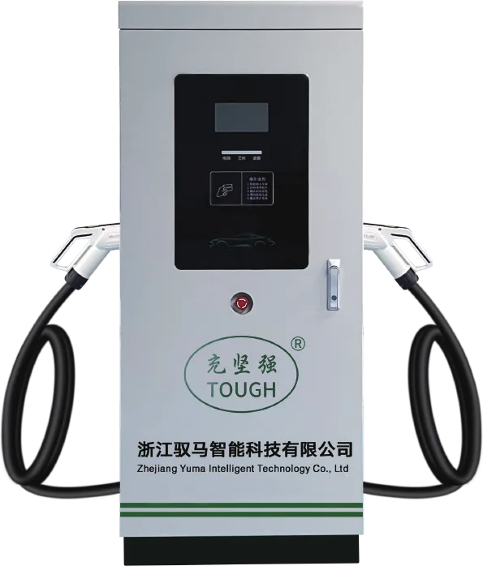
DC хурдан цэнэглэгч 30–160 кВт, шалан дээр
7 инчийн мэдрэгч дэлгэц, QR код эсвэл картаар эхлүүлнэ. 1 эсвэл 2 буутай. OCPP, 4G, Ethernet холболт. Ашиг тус ≥95%, чадлын коэффициент ≥0.99.
- Нэрлэсэн чадал
- 30–160 кВт
- Үйлдвэрлэгч
- Yuma / TOUGH
- Гаралтын хүчдэл
- DC 50–1000V
- Хамгаалалтын зэрэг
- IP54
| Үзүүлэлт | 30 кВт | 40 кВт | 60 кВт | 80 кВт | 120 кВт | 160 кВт |
|---|---|---|---|---|---|---|
| Хамгийн их гаралтын гүйдэл | 100A | 134A | 200A | 250A | 250A | 250A |
| Хэмжээ | 700×440×1650 мм | |||||
| Дэлгэц | 7 инчийн мэдрэгч дэлгэц | |||||
| Сүлжээний холболт | Ethernet / 4G / OCPP | |||||
| Цэнэглэх горим | Автомат дүүргэлт, хугацаагаар, энергиэр, мөнгөн дүнгээр | |||||
| Эхлүүлэх арга | Товч / QR код / карт | |||||
| Тогтмол чадлын хүчдэлийн муж | DC 330–1000V | |||||
| Оролтын хүчдэл | AC 380V ±20% | |||||
| Давтамж | 50Hz ±10% | |||||
| Буу | 1 эсвэл 2 (сонголт) | |||||
| Кабелийн урт | 4 м (стандарт) | |||||
| Үр ашиг | ≥95% | |||||
| Чадлын коэффициент | ≥0.99 | |||||
| Эрчим хүчний тоолуур | Class 1.0 | |||||
| Хамгаалалт | Богино холболт, хэт халалт, их гүйдэл, алдагдал, их ба бага хүчдэл | |||||
| Дуу чимээ | ≤65 dB | |||||
| Хамгаалалтын зэрэг | IP54 | |||||
| Ажиллах орчин | Дотор, гадаа | |||||
| Ажиллах температур | −20~+50℃ | |||||
| Далайн түвшнээс дээш | ≤2000 м | |||||
| Хөргөлт | Агаараар | |||||
| Суурилуулалт | Шалан дээр | |||||
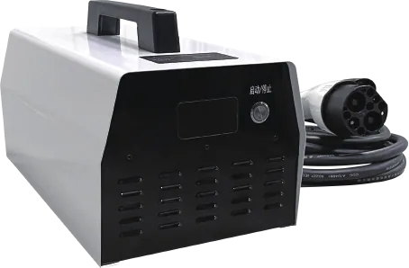

DC 7 кВт, зөөврийн ба ханын
220V нэг фазын сүлжээнээс ажиллана. Нэг товчоор эхлүүлж, зогсооно. Дотор эсвэл халхавчтай гадаа ашиглана.
- Гаралтын чадал
- 0–6600 Вт
- Үйлдвэрлэгч
- Yuma / TOUGH
- Гаралтын хүчдэл
- 250–610V DC
- Хамгаалалтын зэрэг
- IP54
| Үзүүлэлт | Утга |
|---|---|
| Оролтын хүчдэл (AC) | 85–265V AC; 220V |
| Гаралтын чадал | 0–6600 Вт |
| Гаралтын хүчдэл | 250–610V DC |
| Тогтмол чадлын муж | 330–580V DC |
| Гаралтын гүйдэл | 0–20A |
| Холболт | 220V тусгай шугам |
| Дуу чимээ | <60 dB |
| Хөргөлт | Албадмал агаар |
| Хамгаалалтын зэрэг | IP54 |
| Ажиллах температур | −30~50℃, хэт халалтын хамгаалалттай |
| Нойтшилт | 5%–95% |
| Хэмжээ (Ө×Б×З) | 424×224×234 / 480×320×105 мм |
| Жин | 12 / 12.8 кг |
| Кабелийн урт | 4 м |

DC 20–40 кВт, тулгууртай
380V гурван фазын сүлжээнээс ажиллана, 50–1000V DC гаралттай. Парк, талбай, жижиг бизнест тохиромжтой.
- Нэрлэсэн чадал
- 20–40 кВт
- Үйлдвэрлэгч
- Yuma / TOUGH
- Гаралтын гүйдэл
- 0–100A
- Хамгаалалтын зэрэг
- IP54
| Үзүүлэлт | Утга |
|---|---|
| Оролтын хүчдэл | AC 380V ±20% |
| Гаралтын хүчдэл | 50–1000V DC |
| Гаралтын гүйдэл | 0–100A |
| Тогтмол чадлын муж | 300–1000V DC |
| Холболт | 380V тусгай шугам |
| Дуу чимээ | <65 dB |
| Хамгаалалтын зэрэг | IP54 |
| Ажиллах температур | −20~50℃, хэт халалтын хамгаалалттай |
| Нойтшилт | 5%–95% |
| Хэмжээ (Ө×Б×З) | 650×460×222 мм |
| Жин | 45.5 кг |
| Кабелийн урт | 4 м |
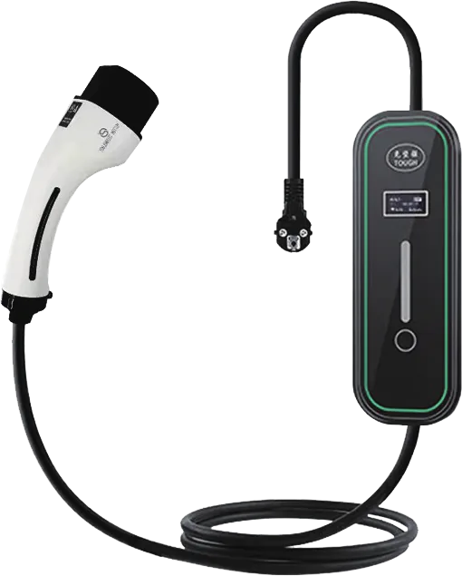
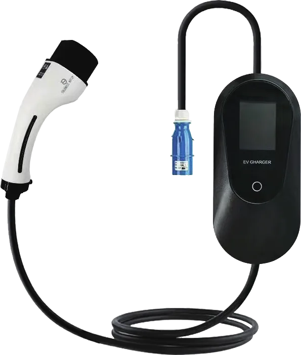
Европ Type 2 зөөврийн AC цэнэглэгч
Type 2 (Mennekes) залгуурт европ машинд. Бүх хамгаалалттай, цэнэглэх хугацааг товлож болно. IEC 62196-2017.
- Гаралтын чадал
- 3.5 / 7 кВт
- Үйлдвэрлэгч
- Yuma / TOUGH
- Стандарт
- IEC 62196-2017
- Хамгаалалтын зэрэг
- IP55
| Үзүүлэлт | YMO2A-16-K5 (3.5 кВт) | YMO2B-32-K5 (7 кВт) |
|---|---|---|
| Нэрлэсэн хүчдэл | AC 220V | |
| Давтамж | 50/60 Hz | |
| Гаралтын гүйдэл | 8A / 10A / 13A / 16A | 10A / 16A / 24A / 32A |
| Гаралтын чадал | 3.5 кВт (max) | 7 кВт (max) |
| Ажиллах хүчдэл | 90–270V | |
| Ажиллах орчин | Дотор, гадаа | |
| Ажиллах температур | −30~50℃ | |
| Цэнэглэх хуваарь | Дэмждэг | |
| Хамгаалалтын зэрэг | IP55 | |
| Кабелийн хөндлөн огтлол | 2.5 мм² | 6 мм² |
| Галд тэсвэрийн зэрэг | UL94-V0 | |
| Залгуурын ашиглалтын хугацаа | 10000+ удаа | |
| Хамгаалалт | Алдагдал, их гүйдэл, их ба бага хүчдэл, температур, аянгын хамгаалалт | |
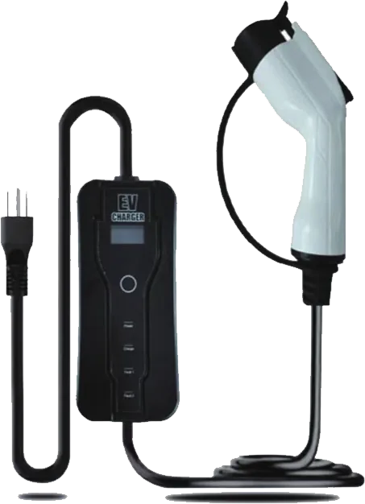
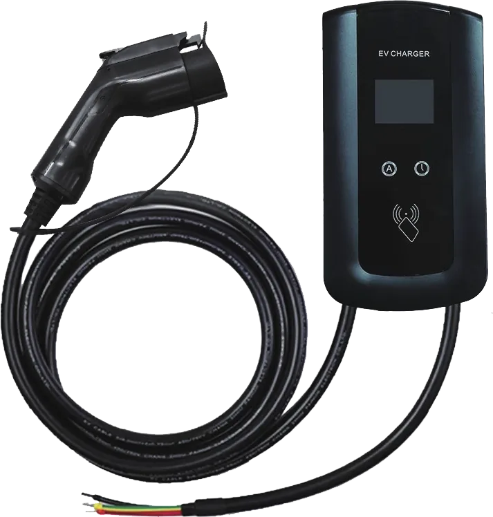
Америк Type 1 зөөврийн AC цэнэглэгч
J1772 (Type 1) залгуур. 110–120V сүлжээнд. SAE J1772-2010 стандарт.
- Гаралтын чадал
- 3.5 / 8.4 кВт
- Үйлдвэрлэгч
- Yuma / TOUGH
- Стандарт
- SAE J1772-2010
- Хамгаалалтын зэрэг
- IP55
| Үзүүлэлт | YMM2-16-K5 | YMM3-40-K5 |
|---|---|---|
| Нэрлэсэн хүчдэл | AC 110V | AC 120V |
| Давтамж | 50/60 Hz | |
| Гаралтын гүйдэл | 8A / 10A / 13A / 16A | 40A |
| Гаралтын чадал | 3.5 кВт (max) | 8.4 кВт (max) |
| Ажиллах хүчдэл | 90–270V | |
| Ажиллах орчин | Дотор, гадаа | |
| Ажиллах температур | −20~50℃ | |
| Хамгаалалтын зэрэг | IP55 | |
| Кабелийн хөндлөн огтлол | UL 3×14AWG+18AWG | UL 3×9AWG+18AWG |
| Галд тэсвэрийн зэрэг | UL94-V0 | |
| Залгуурын ашиглалтын хугацаа | 10000+ удаа | |
| Хамгаалалт | Алдагдал, их гүйдэл, их ба бага хүчдэл, температур, аянгын хамгаалалт | |
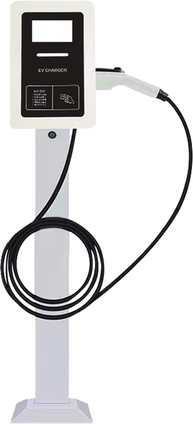
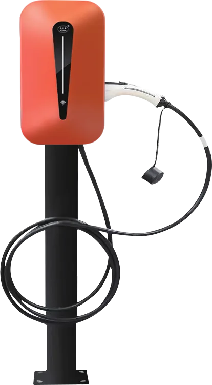
Европ Type 2 AC станц 7 ба 22 кВт
Тулгуур дээр суурилуулах станц. 22 кВт нь 380V гурван фазын, 7 кВт нь 220V нэг фазын сүлжээнд.
- Гаралтын чадал
- 7 / 22 кВт
- Үйлдвэрлэгч
- Yuma / TOUGH
- Стандарт
- IEC 62196-2017
- Хамгаалалтын зэрэг
- IP54 / IP55
| Үзүүлэлт | YM03B-B1-J22-4.3-4 (22 кВт) | YM03C-B1-J70-4 (7 кВт) |
|---|---|---|
| Нэрлэсэн хүчдэл | AC 380V | AC 220V |
| Давтамж | 50/60 Hz | |
| Гаралтын гүйдэл | 32A | |
| Гаралтын чадал | 22 кВт (max) | 7 кВт (max) |
| Ажиллах хүчдэл | 280–470V | 90–270V |
| Ажиллах орчин | Дотор, гадаа | |
| Ажиллах температур | −30~50℃ | |
| Хамгаалалтын зэрэг | IP54 | IP55 |
| Кабелийн хөндлөн огтлол | 6 мм² | |
| Галд тэсвэрийн зэрэг | UL94-V0 | |
| Залгуурын ашиглалтын хугацаа | 10000+ удаа | |
| Хамгаалалт | Алдагдал, их гүйдэл, их ба бага хүчдэл, температур, аянгын хамгаалалт | |
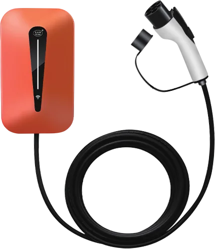
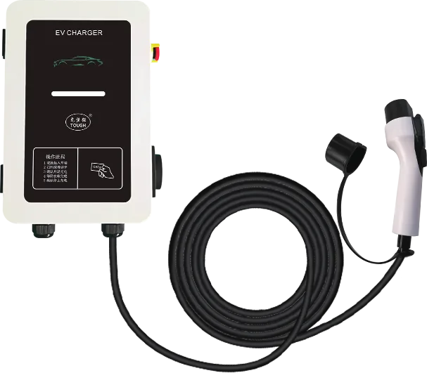
Ханын AC станц 7 кВт, гэр ахуйн (GB/T)
Залгаад цэнэглэх, картаар эхлүүлэх, 4G-ээр удирдах гурван хувилбартай. Ханан дээр эсвэл тулгуурт суурилуулна.
- Нэрлэсэн чадал
- 7 кВт / 32A
- Үйлдвэрлэгч
- Yuma / TOUGH
- Стандарт
- GB/T 18487.1-2015
- Хамгаалалтын зэрэг
- IP54
| Үзүүлэлт | Залгаад цэнэглэх | Картаар эхлүүлэх | 4G эхлүүлэх |
|---|---|---|---|
| Загвар | YMG3-32-D4 | ||
| Хэрэглэгчийн интерфейс | LED | ||
| Суурилуулалт | Ханан дээр эсвэл тулгуурт | ||
| Хэмжээ | 370×265×110 мм | ||
| Жин | 4.5 кг | ||
| Корпусын материал | PC+ABS | ||
| Кабелийн урт | 4 м | ||
| Кабелийн хөндлөн огтлол | 6 мм² | ||
| Хэмжилтийн нарийвчлал | Class 2.0 | ||
| Оролтын хүчдэл | AC 220V ±20% | ||
| Гаралтын гүйдэл | 32A | ||
| Сүлжээ | – | – | 4G, хуваарьт цэнэглэлт |
| Эсэргүүцэл (тусгаарлалт) | 500 МОм | ||
| Хамгаалалтын зэрэг | IP54 | ||
| Галд тэсвэрийн зэрэг | UL94-V0 | ||
| Ажиллах температур | −20~50℃ | ||
| Ажлын өндөр | <2000 м | ||
| Дуу чимээ | ≤60 dB | ||
| MTBF | 100000 цаг | ||
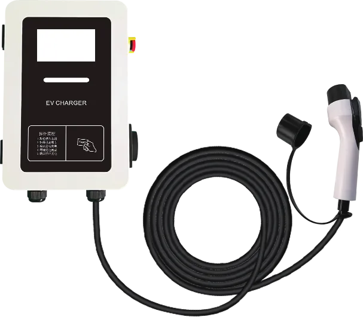
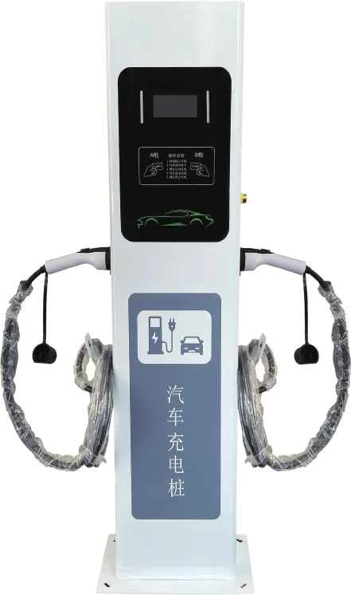
Арилжааны AC станц 7 кВт ба давхар буутай 14 кВт
LCD дэлгэцтэй, QR кодоор эсвэл картаар төлж цэнэглэнэ. 4G эсвэл OCPP сүлжээнд холбогдоно. Давхар буутай 14 кВт станц нь зэрэг хоёр машин цэнэглэнэ.
- Нэрлэсэн чадал
- 7 / 14 кВт
- Үйлдвэрлэгч
- Yuma / TOUGH
- Стандарт
- GB/T 18487.1-2015
- Хамгаалалтын зэрэг
- IP54
| Үзүүлэлт | YMG3-32-E4 (7 кВт) |
|---|---|
| Хэрэглэгчийн интерфейс | LCD |
| Суурилуулалт | Ханан дээр эсвэл тулгуурт |
| Хэмжээ | 370×265×110 мм |
| Жин | 4.5 кг |
| Оролтын хүчдэл | AC 220V ±20% |
| Гаралтын гүйдэл | 32A |
| Цэнэглэх горим | QR кодоор эсвэл картаар |
| Төлбөрийн арга | QR код, карт |
| Сүлжээ | 4G / OCPP |
| Хэмжилтийн нарийвчлал | Class 2.0 |
| Хамгаалалтын зэрэг | IP54 |
| Ажиллах температур | −20~50℃ |
| Дуу чимээ | ≤60 dB |
| MTBF | 100000 цаг |
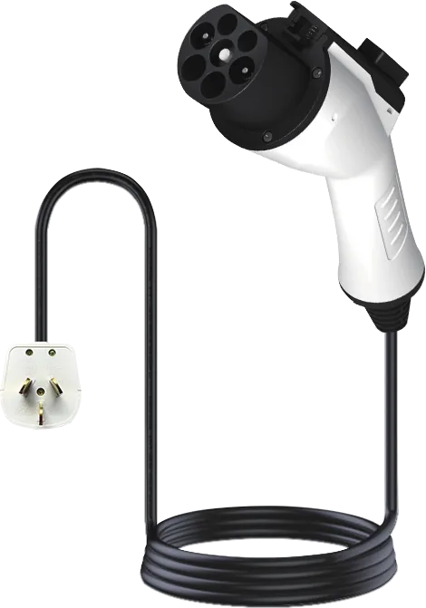
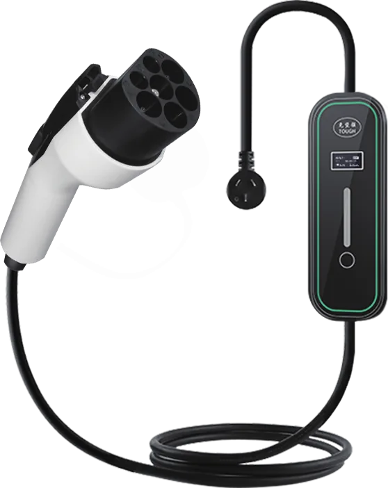
GB/T зөөврийн AC цэнэглэгч
Хятад GB/T залгуурт машинд. 3.5 ба 7 кВт загвар, 220V. Хувилбарт хамааран цэнэглэх хуваарь, гүйдлийг сонгох боломжтой.
- Гаралтын чадал
- 3.5 / 7 кВт
- Үйлдвэрлэгч
- Yuma / TOUGH
- Стандарт
- GB/T 18487.1-2015
- Хамгаалалтын зэрэг
- IP54
| Үзүүлэлт | YMG2B-16-D5 | YMG2A-16-K5 | YMG1-32-K5 | YMG2A-32-D5 | YMG2A-32-K5 |
|---|---|---|---|---|---|
| Нэрлэсэн хүчдэл | AC 220V | ||||
| Давтамж | 50/60 Hz | ||||
| Гаралтын гүйдэл | 8A / 16A / 24A / 32A | 8A / 10A / 13A / 16A | 8A / 16A / 24A / 32A | 32A | 8A / 10A / 13A / 16A / 32A |
| Гаралтын чадал | 3.5 кВт | 3.5 кВт (max) | 7 кВт (max) | 7 кВт | 7 кВт (max) |
| Ажиллах хүчдэл | 90–270V | ||||
| Ажиллах орчин | Дотор, гадаа | ||||
| Ажиллах температур | −20~50℃ | ||||
| Хамгаалалтын зэрэг | IP54 | ||||
| Кабелийн хөндлөн огтлол | 2.5 мм² | 2.5 мм² | 6 мм² | 6 мм² | 6 мм² |
| Галд тэсвэрийн зэрэг | UL94-V0 | ||||
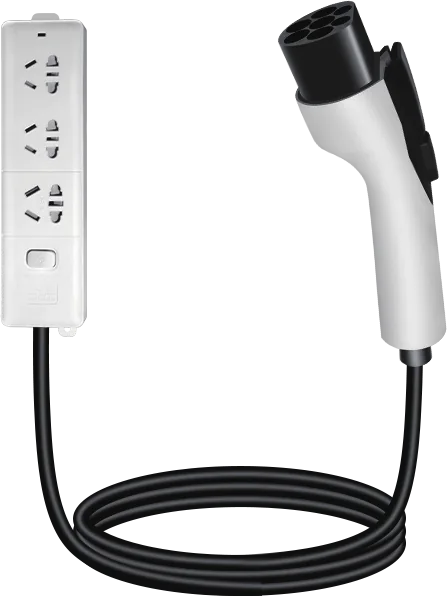
Зөөврийн гаргагч (discharger) 3.5 кВт
Машины батарейнаас 220V цахилгаан авах залгуурын самбар. Гадаа, дотор хэрэглэнэ.
- Гаралтын чадал
- 3.5 кВт
- Үйлдвэрлэгч
- Yuma / TOUGH
- Стандарт
- GB/T 18487.1-2015
- Хамгаалалтын зэрэг
- IP54
| Үзүүлэлт | YMG1-16-F5 |
|---|---|
| Нэрлэсэн хүчдэл | AC 220V |
| Гаралтын гүйдэл | 16A |
| Гаралтын чадал | 3.5 кВт |
| Ажиллах хүчдэл | 90–270V |
| Ажиллах орчин | Дотор, гадаа |
| Ажиллах температур | −20~50℃ |
| Хамгаалалтын зэрэг | IP54 |
| Кабелийн хөндлөн огтлол | 2.5 мм² |
| Галд тэсвэрийн зэрэг | UL94-V0 |
Холбогчийн төрөл, бүс нутгаар
| Япон | Америк | Европ, бусад улс | Хятад | |
|---|---|---|---|---|
| AC залгуур | J1772 (Type 1) | J1772 (Type 1) | Mennekes (Type 2) | GB/T |
| DC залгуур | CHAdeMO | CCS1 | CCS2 | GB/T |
Ерөнхий үзүүлэлт
| Үзүүлэлт | Утга |
|---|---|
| Брэнд | TOUGH / OEM |
| Дамжуулах зүү | Зэс хайлш дээр мөнгөн бүрээс |
| Битүүмжлэл | Резин, силикон |
| Ажиллах орчны температур | −30~+55℃ |
| Хадгалах температур | −40~+80℃ |
| Хамгаалалтын зэрэг | IP54 (хянагч ба холболтын цэг) |
| Тусгаарлалтын эсэргүүцэл | >1000 МОм |
| Баталгаа | Ихэнх загвар 3 жил |